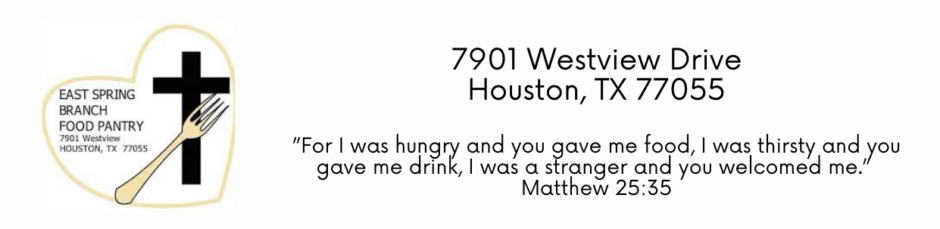

This page will be a little more sparse. I am not one to brag about my community service. That being said, through my church and highschool, I have had gratifying volunteer work experiences. Notably, I frequently worked with a family friend who ran a food pantry.
